Рецепты приготовления блюд
На этом сайте вы сможете увидеть подробные рецепты известных блюд , а так же активно применять их в готовке после изучения
Плов:
Плов – блюдо восточной кухни. Слово «плов» пришло в русский язык из тюркско-татарских языков, где оно звучит как «пилав». Происхождение плова связывают с Индией и Персией, откуда он распространился по всей Азии.
Подробней о плове
Существуют тысячи рецептов как готовить плов, однако любой плов готовится из двух составных частей: это мясная, рыбная или другая заправка (в среднеазиатском варианте «зирвак» или в иранском «гара»), и рис, или, значительно реже, другая крупа – пшеница, горох, кукуруза, маш. По сути, плов чем-то напоминает мясную рисовую кашу, первые русские толковые словари так его и определяли. Однако главное отличие плова от каши в том, что зерно для плова не варится, а тушится. Приготовление плова – настоящее искусство. Очень важно правильно подобрать правильный рис для плова – он не должен развариваться, зёрна должны легко отделяться друг от друга. Существует два главных варианта как приготовить плов, или две основные технологии приготовления плова – узбекская и азербайджанская.
Плов, рецепт приготовления которого предусматривает совместное приготовление зирвака и крупы, называется среднеазиатский или узбекский. Единственное исключение – самаркандский плов, который готовится по азербайджанской технологии. Различные рецепты плова возникают из-за выбора и комбинации зирвака, зерна, овощей, специй, последовательности закладки и продолжительности обработки продуктов, оговоренные рецептом плова. Как известно, в Азии обычно готовят плов из баранины. Рис для приготовления плова по среднеазиатской технологии должен быть специальный - это красный узгенский рис или «девзира». Обязательным овощем считается лишь жёлтая морковь. Из специй, как правило, используют зиру, красный перец, барбарис, чеснок, а также курагу, айву и изюм. Для узбекского плова очень важным является предварительное прокаливание масла. Традиционно используют смесь растительного (чаще хлопкового, реже подсолнечного, кунжутного) масла и животного жира (бараньего, козьего). Узбекский плов готовят исключительно в большом толстостенном чугунном, алюминиевом или медном казане, на открытом огне и на улице, потому что с последствиями прокаливания масла трудно справится даже очень хорошей вытяжке.
В азербайджанском (иранском или турецком) варианте плова заправка, «гара», и крупа готовятся по отдельности и соединяются лишь на общем блюде или даже на тарелке. Гара может быть мясной, рыбной, яичной, овощной. Почти во всех рецептах азербайджанского плова используются фрукты – алыча, гранат, абрикос и т.п. Например, плов из куры по-персидски готовят исключительно с гранатовым соком. Рис для плова всегда отваривают с маслом - сливочным или топлёным. В отличие от узбекского плова, азербайджанский плов подают не горячим, а чуть тёплым, но ещё с не застывшим маслом.
Здесь следует вспомнить турецкую поговорку «Сколько в мире существует мусульманских городов, столько в мире существует рецептов плова», и оговориться, что в разных странах можно найти массу вариаций, сочетающих оба способа приготовления плова. При этом сегодня самым распространённым вариантом плова всё же является узбекский плов. Соединяя в казане рис и мясную часть с овощами и специями, готовят плов из свинины (что в принципе невозможно в мусульманских странах), плов с курицей, плов из говядины – продуктов, которые не популярны в Средней Азии. Оригинальны вкусом обладает сладкий плов по-индийски с сухофруктами. В общем, выбирайте рецепт плова, приготовьте это замечательное блюдо и пусть вам будет вкусно! Как приготовить плов. Наши советы Рис для плова. Не используйте индийские или тайские сорта риса - басмати или жасмин. Они слишком мягкие, быстро развариваются и превратятся в кашу. Если вы не найдёте девзира или ошпар, возьмите итальянский рис, предназначенный для паэльи. Масло для плова. Используйте только рафинированное масло, ароматное масло будет заглушать запах плова. Специи для плова. Обязательными являются только кумин, острый красный перец и барбарис. Всё остальное – на ваш вкус.
Часто используемые ингредиенты: лук репчатый, морковь, чеснок, масло растительное, рис, рис длиннозерный, зира, куркума молотая, свинина, приправа, барбарис, лавровый лист, кориандр, куркума, лук, баранина, паприка молотая, базилик, перец красный молотый
Продукты:
| Мясо (курица, баранина и т.д.) | 1 кг |
|---|
| Рис (длиннозерный пропаренный или другой рис) | 1 кг |
|---|
| Морковь | 1 кг |
|---|
| Чеснок | 2 головки |
|---|
| Перец острый свежий | 2 стручка |
|---|
| Зира или другие пряности | по вкусу |
|---|
| Соль | по вкусу |
|---|
| Масло растительное | 250-300 мл |
|---|
Ход приготовления:
Мясо тщательно промоем и обсушим. Затем нарежем на небольшие кусочки, примерно по 4 см.

Почистим морковку и нарежем тонкими, примерно по 0,5 см в толщину, полосками.

Очистим лук, нарежем тонкими полукольцами или помельче.
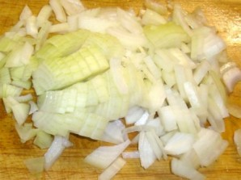
Лучше всего плов готовить, конечно же, в казане. Но можно в толстостенной кастрюле. Наливаем в казан или кастрюлю масло и разогреваем на сильном огне. Бросим в разогретое масло немного лука и обжарим его до темно-коричневого цвета. Затем убираем лук из казана. Выкладываем в разогретое масло мясо.

Минуты через 3 перемешиваем и продолжаем обжаривать на сильном огне до любимой вами степени. Кто-то ведь любит слегка подрумяненное мясо, а кому-то по нраву сильно обжаренные кусочки.

Мясо обжарилось, добавляем лук и перемешиваем. Обжариваем минут 5-7. Не забываем перемешивать, ведь готовим на большом огне!

Теперь добавим полосочки моркови. Все перемешиваем и обжариваем. Готовим либо до подрумянивания моркови, либо до мягкости. Опять же, кому как нравится. А теперь добавим примерно полтора-два стакана горячей воды, чайную ложку соли и приправу для плова. Даем покипеть минут 15-20 под крышкой на среднем огне.

Тщательно промываем под проточной водой рис, чтобы вымыть из него весь крахмал. Чтобы у вас гарантированно получился плов, а не каша, лучше возьмите пропаренный рис. Выкладываем промытый рис в казан.
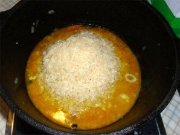
Когда выкипит жидкость и рис окажется на поверхности, собираем его небольшой горкой. Делаем несколько дырок черенком ложки до дна казана или кастрюли. И плотно закрываем плов крышкой. Уменьшаем огонь до маленького и готовим еще минут 20. Затем выключаем огонь, и пусть плов постоит еще минут 15.

Раскладываем плов по тарелкам или выкладываем в одно большое блюдо.
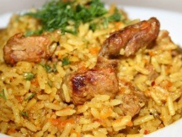
Бешбармак:
Как приготовить настоящий классический бешбармак из конины? Да очень легко! Основная трудность - достать эту самую конину, а все остальное, с помощью рецепта приготовления бешбармака из конины с фото, сделать довольно легко. Для полного соответствия классическому варианту нам не хватает только "казы" - конской колбасы. Но и без нее блюдо получается вкусным. Итак, внимательно читаем рецепт и приступаем к готовке.
Подробнее о бешбармаке.

Бешбармак — национальное блюдо кочевых тюркских народов в Средней Азии. Термин «бешбармак» означает «пять пальцев», потому что кочевники раньше ели это блюдо руками. Бешбармак — это отварное, мелко нарезанное мясо, смешанное с вареной лапшой и приправленное пряностями с луковым соусом. Обычно подается в большом круглом блюде. У некоторых народов бешбармак подается с шурпой — отварным бульоном из баранины в пиалах, а в казахской кухне это блюдо готовится из конины. Однако в наше время люди приспособили бешбармак к своим собственным вкусам, используя говядину, баранину, курицу, а также мясо верблюда и даже рыбу. Тесто для лапши в бешбармак приготавливается просто: в рецепт входят мука, яйцо, соль, вода. В блюдо добавляют определенные специи, зелень и корнеплоды. Пошаговые рецепты приготовления с фотографиями — идеальное пособие для тех, кто хочет приготовить вкусный бешбармак. Бешбармак — национальное блюдо кочевых тюркских народов в Средней Азии. Термин «бешбармак» означает «пять пальцев», потому что кочевники раньше ели это блюдо руками. Бешбармак — это отварное, мелко нарезанное мясо, смешанное с вареной лапшой и приправленное пряностями с луковым соусом. Обычно подается в большом круглом блюде. У некоторых народов бешбармак подается с шурпой — отварным бульоном из баранины в пиалах, а в казахской кухне это блюдо готовится из конины. Однако в наше время люди приспособили бешбармак к своим собственным вкусам, используя говядину, баранину, курицу, а также мясо верблюда и даже рыбу. Тесто для лапши в бешбармак приготавливается просто: в рецепт входят мука, яйцо, соль, вода. В блюдо добавляют определенные специи, зелень и корнеплоды. Пошаговые рецепты приготовления с фотографиями — идеальное пособие для тех, кто хочет приготовить вкусный бешбармак.
Продукты:
| Конина | 1,5кг |
|---|
| Мука | 2-3 стакана |
|---|
| Яйца | 2 штуки |
|---|
| Зелень | 50 г |
|---|
| Соль | 1 ложка |
|---|
| Перец черный молотый | 1-2 щепоток |
|---|
| Лук репчатый | 2-3 штук |
|---|
| Лавровый лист | 1-2 штук |
|---|
Ход приготовления:
Подготавливаем мясо для варки. Моем, разрезаем на куски. Укладываем в кастрюлю и заливаем водой так, чтобы оно было полностью покрыто. Ставим варить. Когда закипит - снимаем пену, уменьшаем огонь и варим часа 3. Примерно за пол часа до готовности добавляем соль, перец, одну луковицу и лавровый лист. Во время варки необходимо постоянно снимать с поверхности бульона жир.

Достаем тесто из холодильника и раскатываем тонким слоем. Толщиной примерно 2-3 мм. Нарезаем на ромбики, квадратики, треугольники - кому как нравится. Даем слегка подсохнуть.
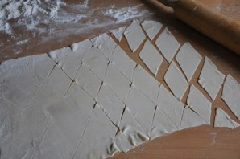
Чистим репчатый лук и нарезаем кольцами или полукольцами. Перчим, солим и заливаем горячим бульоном. Закрываем крышкой и даем постоять примерно минут 10

Достаем готовое мясо и нарезаем его тонкими пластинками.
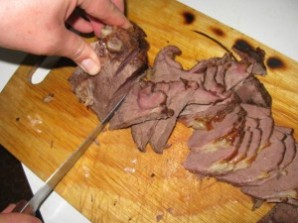
В кипящий бульон опускаем нарезанное тесто и варим минут 6-8.
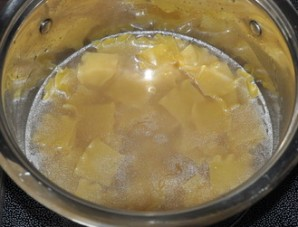
На подогретое блюдо выкладываем сваренное тесто, затем выкладываем кусочки мяса и поверху выкладываем лук. Перед подачей посыпаем зеленью.
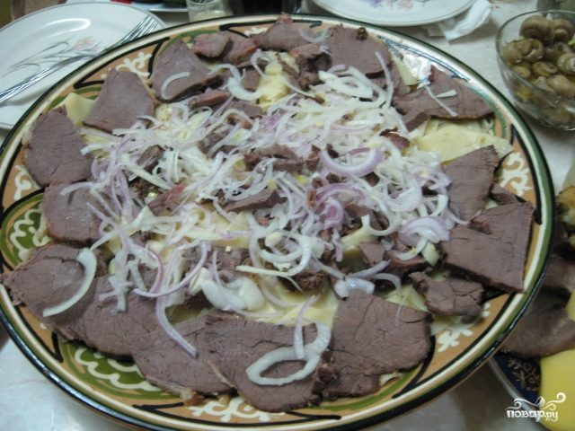
Баурсаки:
Сегодня я предлагаю вам классический рецепт баурсак казахских - это такие воздушные пончики, которые могут быть и сладкими, и пресными, в зависимости от того, с чем вы их будете кушать. Но лично я ем их просто так, как самостоятельное блюдо, а если приходят гости, то я просто посыпаю баурсаки сахарной пудрой и подаю к столу. В общем, они идеально подойдут к любому блюду, даже к супу или салату. Да и приготовить такие пончики довольно легко, и сейчас я с удовольствием расскажу вам, как сделать баурсаки казахские.
Подробнее о баурсаках.
Как правило, готовится из пресного или дрожжевого теста в виде небольших пончиков (ромбовидной или круглой формы), изготовляемых путём жарки во фритюре в казане. Также существуют рецепты творожных баурсаков. Обычно подаётся в качестве дополнения, например, к шурпе, либо к чаю (у татар только к чаю, у уйгуров к чайному напитку атканчай).
Баурсак является непременным атрибутом праздничного дастархана. Играет важную роль в свадебных обрядах башкир и других народов. В татарской свадебной традиции родители жениха (у сибирских татар — невесты) приносили в подарок на свадьбу блюдо с баурсаками или чак-чаком.
В узбекской кухне баурсаки считаются ритуальным блюдом. У туркмен они называются пишме и имеют ромбовидную форму. У турок он называется пиши.
Продукты:
| Мука | 700 Грамм |
|---|
| Дрожжи сухие | 10 Грамм |
|---|
| Молоко | 1 Стакан |
|---|
| Вода | 1 Стакан |
|---|
| Масло растительное | 50 Грамм |
|---|
| Соль | 1,5 Чайных ложки |
|---|
| Сахар | 1 Чайная ложка |
|---|
Ход приготовления:
Соединяем молоко и воду, немного подогреваем, добавляем дрожжи и сахар, перемешиваем и оставляем на 15 минут. На стол высыпаем муку, смешиваем ее с солью, а затем вливаем приготовленную опару и 50 грамм растительного масла. Замешиваем тесто и перекладываем его в глубокую миску, накрываем салфеткой и ставим тесто в теплое место на 1,5 часа.
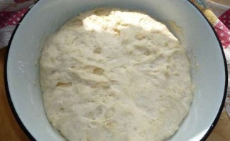
По истечении времени тесто следует обмять и поставить в тепло еще на 30-40 минут.
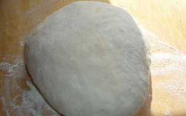
Теперь мы выкладываем тесто на ровную поверхность и раскатываем из него пласт толщиной 0,8-1 сантиметр.

И при помощи стакана или чашки делаем вот такие небольшие кружочки.
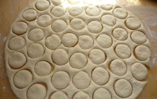
Обрезки мы собираем, формируем из них шар и так же раскатываем, нарезаем его на ромбики.

Теперь все наши кружочки и ромбики мы собираем вместе и накрываем полотенцем на 20 минут.
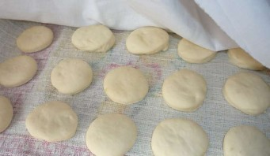
В глубокую сковороду или фритюрницу наливаем столько масла, чтобы баурсаки полностью в нем тонули. Опускаем их порциями в кипящее масло и обжариваем до золотистого цвета со всех сторон. Затем вынимаем их при помощи шумовки и перекладываем на бумажное полотенце. Вот теперь баурсаки готовы. Приятного аппетита!